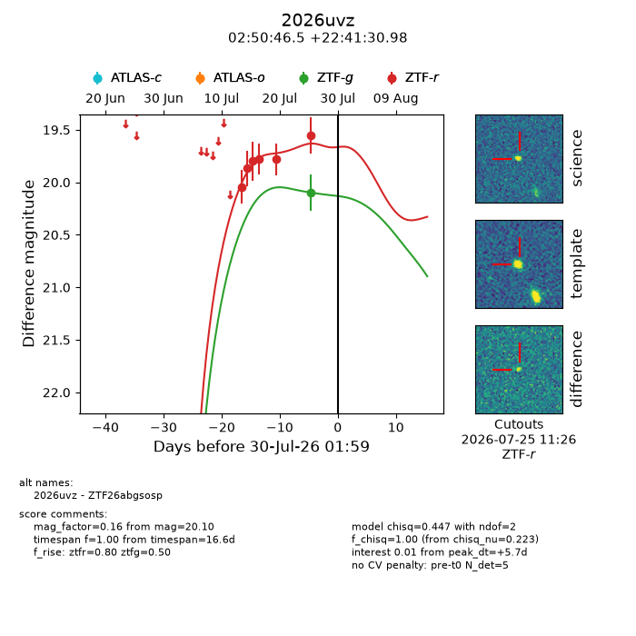
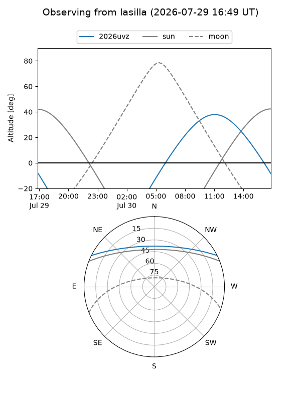
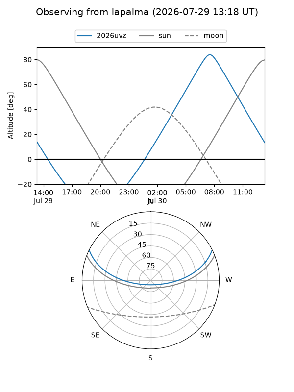
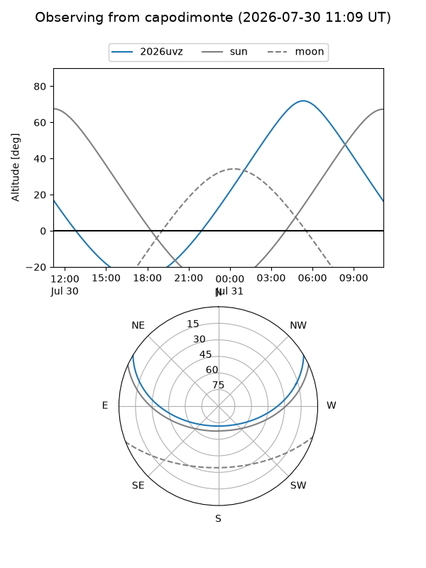
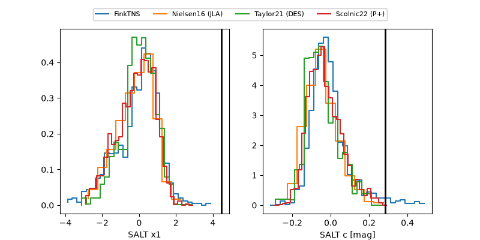

2026uvz
Target 2026uvz at 2026-07-30 13:57
Aliases and brokers:
FINK-ZTF: ztf.fink-portal.org/ZTF26abgsosp
Lasair-ZTF: lasair-ztf.lsst.ac.uk/objects/ZTF26abgsosp
ALeRCE-ZTF: alerce.online/object/ZTF26abgsosp
YSE-PZ: ziggy.ucolick.org/yse/transient_detail/2026uvz
TNS name: wis-tns.org/object/2026uvz
Direct TNS query: direct search
alt names
ZTF26abgsosp (ztf,fink_ztf)
2026uvz (tns,yse)
Coordinates:
equatorial (ra, dec) = 42.6937,+22.69194
equatorial (HMS+DMS) = 02:50:46.50,+22:41:30.98
galactic (l, b) = (155.8766,-32.43666)
Flags:
TNS type: nan
peak dt: +6.2
Photometry:
last ztfg=20.10, ztfr=19.55
1 ztfg, 6 ztfr detections
Lightcurve

Visibility



Additional plots
